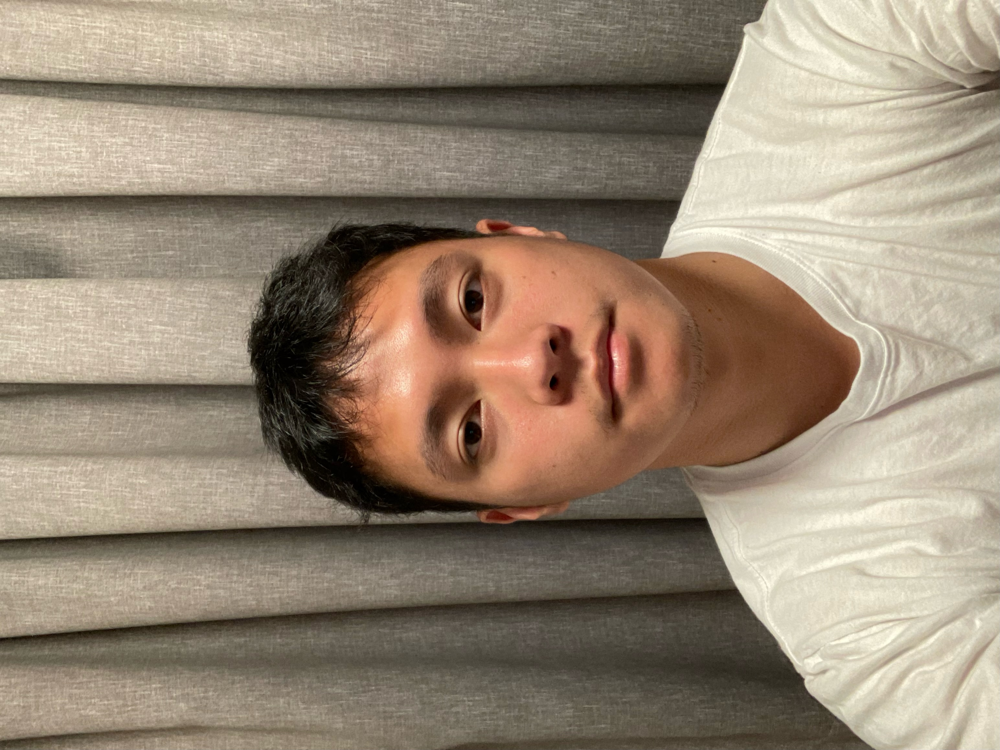

Robert Wijaya

Master's Student
The Australian National University
News / Activities
- 11/2022 During this semester holiday (Nov'22 to Feb'23), I serve as a Research Intern (remote) at NUS-HCI Lab Singapore, working on text spacing modeling on AR eyeglasses.
- 08/2022 In semester 2, 2022 I serve as one of the course representatives for COMP6670 Intro to Machine Learning.
- 07/2022 In semester 2, 2022 I enroll in four courses, they are COMP6710 Structured Programming, ENGN6627 Robotics, COMP6670 Intro to Machine Learning, and COMP8536 Advanced Topics in Deep Learning for Computer Vision.
- 03/2022 In semester 1, 2022 I will be a student representative for two courses: Computer Vision ENGN6528, and Programming for Scientists COMP6730
- 02/2022 In semester 1, 2022 I will take four courses which are Programming for Scientists COMP6730, Professional Practice ENGN6250, Computer Vision ENGN6528, and Engineering Data Analytics ENGN8535.
- 11/2021 Just informed by Australia Awards that I will commence the study in Semester 1, 2022!
- 05/2020 Due to COVID-19 pandemic, my Master's studies will be deferred.
- 02/2020 Just finished EAP course and will start my Master's degree at Australian National University in June 2020.
- 10/2019 I will start my English for Academic Purposes (EAP) course at IALF Jakarta for the next 4.5 months.
- 08/2019 I received an Australia Awards Scholarship!
- 06/2019 I will go to Universitas Syiah Kuala this July to interview for Australia Awards Scholarship!
Short Bio
I am a first year Master's student in Machine Learning and Computer Vision (MMLCV) at the Australian National University (ANU). Prior to that, I obtained my Bachelor of Computer Science in Information System from Universitas Mikroskil, Indonesia.
Research Interest: Machine Learning, Computer Vision.
Recent Works
- Investigating the Robustness and Properties of Detection Transformers (DETR) Toward Difficult Images
Group Research Project in COMP8536 Deep Learning for Computer Vision (2022).
(Papers) - Multi Level Dense Layer Neural Network for Housing Price Prediction
Research Project in ENGN8535 Engineering Data Analytics course (2022).
(Papers) (Code)
Misc
- I have completed 24 MOOC courses, e.g. deep learning, data science, data analysis, machine learning (See the full list here).
- In August 2019 I received Australia Awards Scholarship to pursue a Master's studies in Australia.
- In my spare time, I enjoy swimming, reading books, or watching some random stuff on Youtube.
I can be contacted via my university email, feel free to contact me at: Robert.Wijaya@anu.edu.au